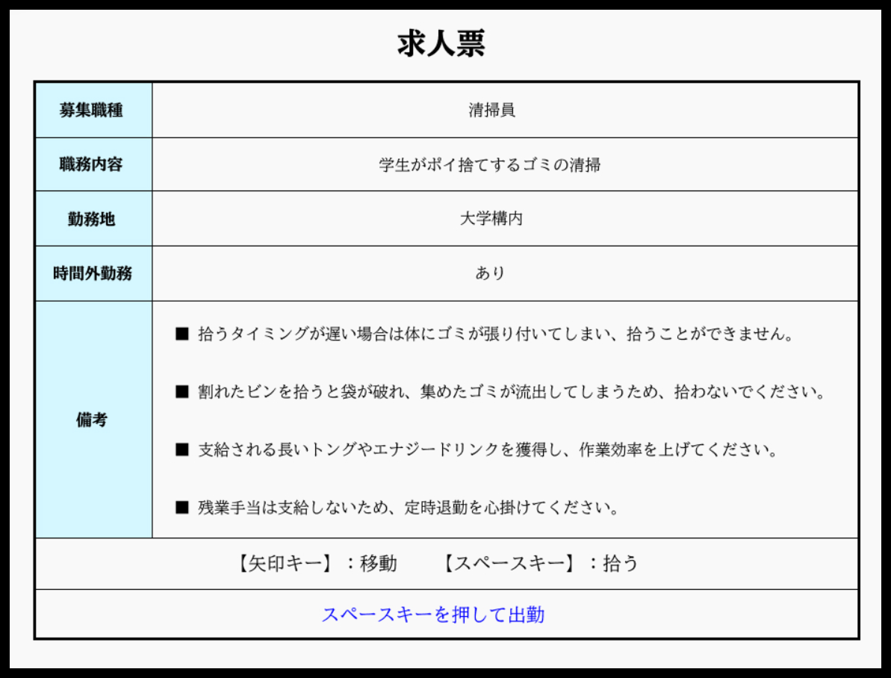
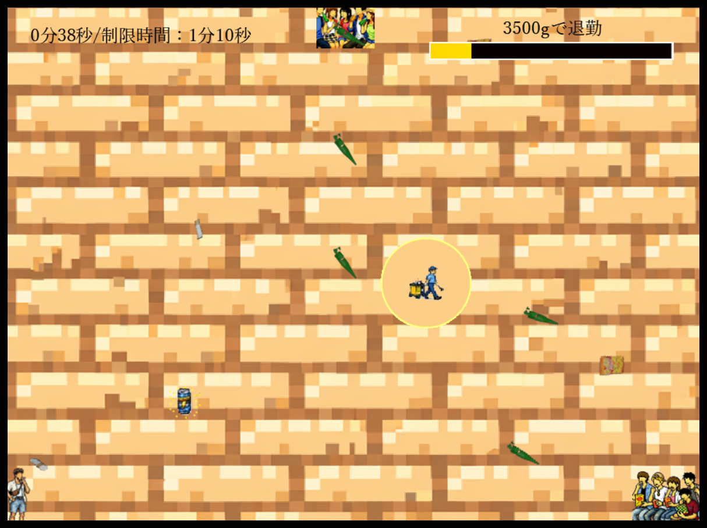
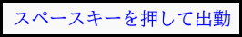
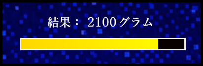
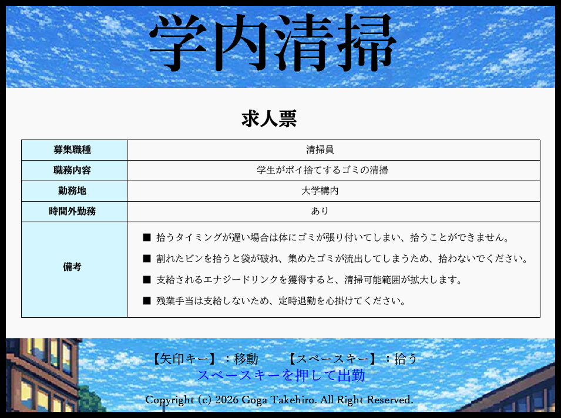
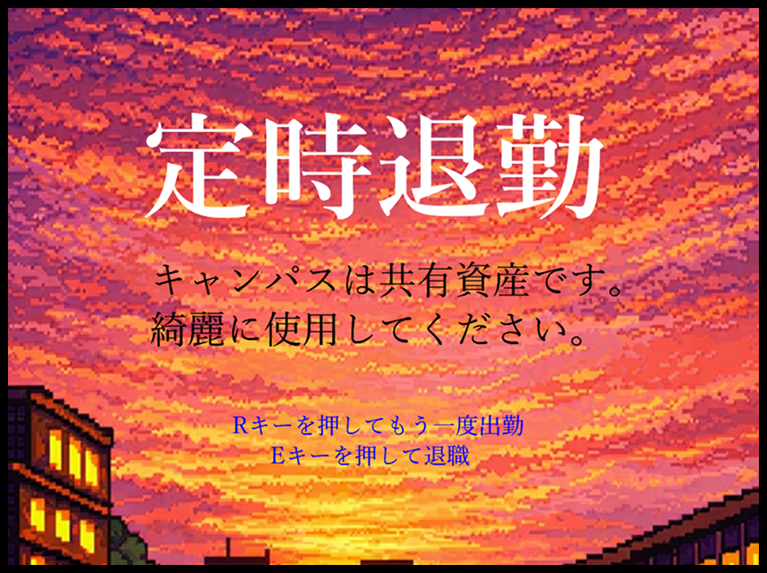
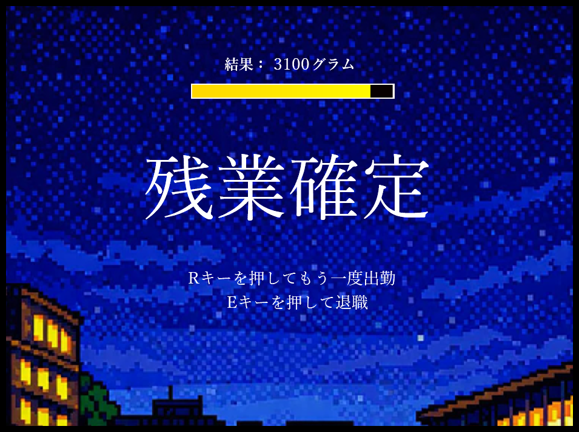

UI/UXを重視したアクションゲーム作品
「学内清掃」
2年次前期の授業「ゲーム制作基礎」で個人制作したアクションゲームです。猛暑の中、清掃員が定時退勤のプレッシャーを抱えながら、大学のキャンパスを清掃するゲームです。
ノーコード開発ツールを使用し、プログラミングを行わずに制作しています。制作全体で70時間以上を要しました。
使用ツール
- Clickteam Fusion 2.5



目的
ノーコード開発ツールによって作成されたゲームをプレイした際に、物を吸い込むゲームシステムに魅力を感じ、自分自身もそのようなゲームシステムを中心としたゲームを制作したいと考えました。
ゲーム制作においてもUI/UXは重要であるため、世界観やグラフィック、内部処理などの様々な要素をプレイヤー目線でデザインすることで、自分自身のUI/UXデザインのスキルを向上させることを目的としました。
制作プロセス
1. ゲーム設計
ゲームルール
一定量のゴミを制限時間内に拾うと、ゲームクリア
操作仕様
- 上下左右矢印キー：移動
- スペースキー：拾う
画面構成
- タイトル画面
- プレイ画面
- ゲームオーバー画面
- ゲームクリア画面
プレイヤーの認知負荷を抑えるため、無駄を省くことで全体的にシンプルな設計になっています。
2. UIデザイン

CTA
ゲームスタート・終了のためのキーを説明するテキストの色には、行動を施す色であるブルーを採用しています
重量ゲージ
プレイ画面の右上に重量をゲージで表示することにより、プレイヤーが直感的に理解できるようにしています

結果重量
ゲームオーバー画面に結果重量を表示することで、再びプレイする際の参考にできるようにしています
3. グラフィックデザイン
タイトル画面

プレイ画面
ゲームクリア画面

ゲームオーバー画面

ゲームシステムがシンプルであるため、高画質のグラフィックにすると違和感が生じることから、全体的にドット絵で統一しています。また、テキストを明朝体で統一することにより、大学の雰囲気を演出しています。
仕様・操作説明画面は求人票をイメージしてデザインすることで、没入感を向上させています。他の画面では、背景で時間の変化を表現しています。
4. サウンドデザイン
BGM
- タイトル画面と仕様・操作説明画面ではチャイムの音を設定することで、大学の雰囲気を演出しています
- ゲーム画面ではミンミンゼミの鳴き声を設定することで、夏の暑さを演出しています
- ゲームオーバー画面ではヒグラシの鳴き声を設定することで、虚しさを演出しています
効果音
ゲーム開始時やゲームオーバー・クリア時、ゴミを拾う時に適切な効果音を再生することにより、プレイヤーが爽快感や没入感を抱けるようにしています
獲得した学び
ゲーム制作における様々な要素をプレイヤー目線でデザインすることにより、プレイヤーが快適に、気持ち良くプレイするためのゲームデザインについて、深く理解することができました。
ゲーム制作のプロセスを俯瞰すると、Web制作と同様にUI/UXデザインが非常に重要であることが分かり、それぞれの段階で有意義な経験をすることができました。特にUIデザインの段階では、プレイヤーを迷わせないデザインを考えることで、UI/UXデザインのスキルアップに繋がったと考えています。また、ゲームの内部処理を実装することで、フロントエンドエンジニアに欠かせない、イベント駆動の思考を身につけることができました。
今回の制作では、自分のキャリアに関わる力を大いに養うことができました。得た学びを活かし、今後はUI/UXデザインのスキルを向上させた上でプログラミングについても学習することで、UI/UXデザインへの理解が深い学生として、フロントエンドエンジニアを目指していきたいと考えています。